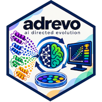

adrevo

This page is the operational reference. For the quickstart and benchmark results, see the README.
Execution contract
Adrevo starts from the project directory passed to adrevo run: it loads config.py, reads the initial evo/main.py, and keeps the original directory unchanged. For each candidate, it creates a new temporary directory containing a copy of the project files and replaces only the configured evo_file. It then runs trusted evaluate.py in the root project's uv environment—the environment you define with the root pyproject.toml. Configured data_dirs are made available separately as benchmark input data.
evaluate.py owns the rest of evaluation: it builds and runs the candidate, validates the candidate's output file, and writes results.json. Adrevo reads only that trusted result:
correct must be a boolean, error a string or null, and larger combined_score values must be better. Adrevo never edits evaluate.py.
Project layout and environments
Use this layout for a new project:
my-project/
├── evaluate.py # trusted evaluator; writes results.json
├── config.py # Adrevo and backend settings
├── pyproject.toml # trusted evaluator dependencies
└── evo/
├── main.py # evolved candidate; writes benchmark output
└── pyproject.toml # optional candidate dependencies
There are three independent environments:
- Adrevo: the repository's uv environment runs the controller, Ray, and model orchestration.
- Trusted evaluator: your root project's
pyproject.tomldefines the uv environment that runsevaluate.py. It is separate from Adrevo's controller dependencies. - Candidate:
evaluate.pychooses how to build and runevo/: uv, Cargo, Go, Node, Docker, or another runtime.
The Ray backend runs the evaluator with uv -q run --project . python evaluate.py. A Python evaluator can run a uv-based candidate with, for example:
The candidate may instead be a non-Python program; only its output format is benchmark-specific. The evaluator validates it and writes results.json.
Configuration
Configuration is Python. config.py or config_*.py must define:
get_adrevo_config(), returningAdrevoConfig;get_backend_config(), returningBackendConfig;build_evo_models(), used byAdrevoConfigto create one or moreModelSpecs.
Important settings:
| Object | Fields |
|---|---|
AdrevoConfig |
evo_file (default evo/main.py), lang_identifier, models, worker count, generation/cost limits, strategies, and backtracking |
BackendConfig |
evaluator timeout_sec and immutable data_dirs |
data_dirs are staged once per worker node and made available in each temporary project directory. They should be treated as benchmark-owned input data.
Commands
| Command | Purpose | Key options |
|---|---|---|
adrevo run PROJECT |
Start one project | --config, --results-dir, --verbose, --ray-address |
adrevo resume PROJECT |
Continue a checkpointed project | required --results-dir; optional --config |
adrevo run-folder PROJECT... |
Run several projects | --config, --results-dir, --max-concurrent |
For example:
Use adrevo COMMAND --help for the complete option list.
Operations
Resume with the same project and results base:
The resumable directory is ./results/my-project/; it contains database_state.json, evogen_state.json, and one <program-id>.zip per saved program. In-flight work is not resumed.
For several projects:
Project directory names must be distinct. To connect to Ray Client, pass --ray-address ray://HOST:10001 (or --ray-ip HOST --ray-port 10001). Use --verbose for Logfire logs and Pydantic AI traces; on a cluster, provide .logfire/ credentials or LOGFIRE_TOKEN on every node.
Common failures
| Symptom | Check |
|---|---|
| No config found | Add config.py or config_*.py; use --config for several variants. |
| Initial run fails | Run evaluate.py locally; it must run the candidate and write a valid results.json. |
| Candidate dependency failure | Check the runtime command and candidate manifest used by evaluate.py. |
| Run ends early | Check generation/cost limits, evaluator timeout, and model credentials. |
| Results directory exists | Choose a new --results-dir; use resume only for a checkpointed run. |